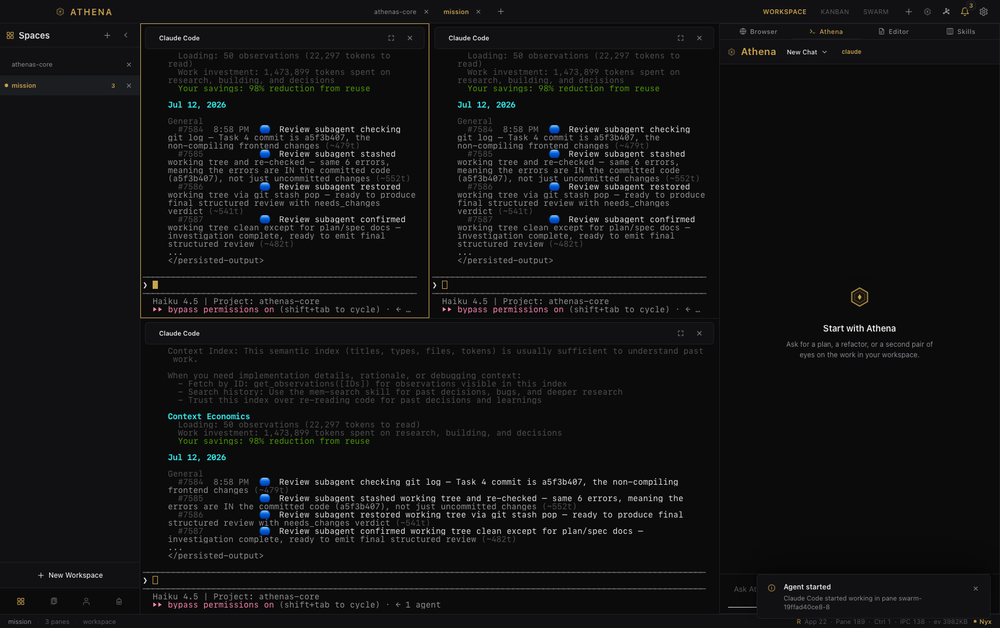

The Athena Papers · N°1 · September 2026
The strategist’s workbench.
Athena’s Core — athenas-core

Real capture — the window as shipped
One window. Every tool. No noise.
N°02 — The workspace
Everything in view. Nothing in the way.
Four views, shown exactly as they ship. Every image is a capture from the current build.


MB
Small. Native. Deliberate.
Footprint
~15 MB
Runtime
Rust / Tauri 2
Privacy
No telemetry
Take the build. Break it.
macOS 13+ · Apple silicon · Public beta
Athena’s Core — the strategist’s workbench